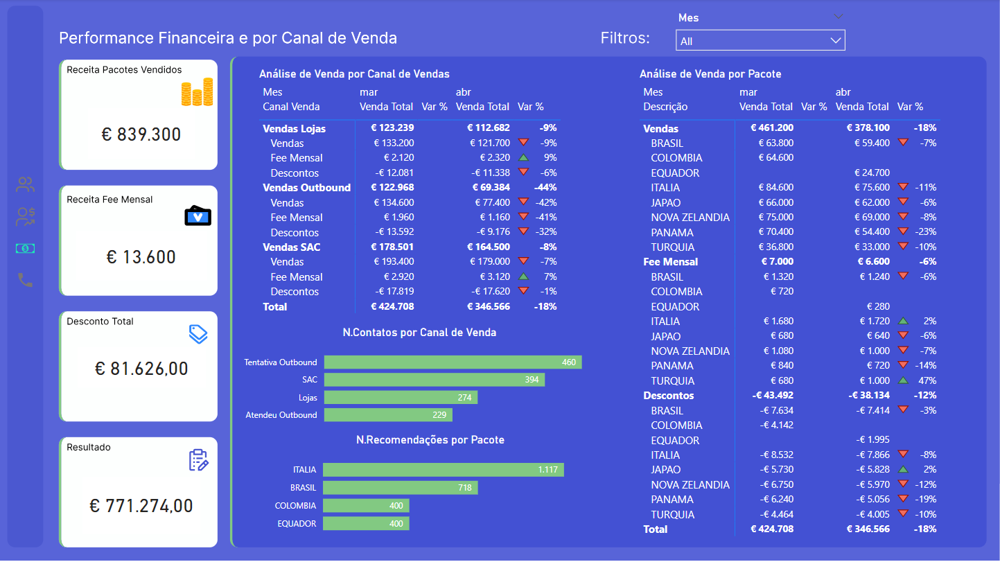
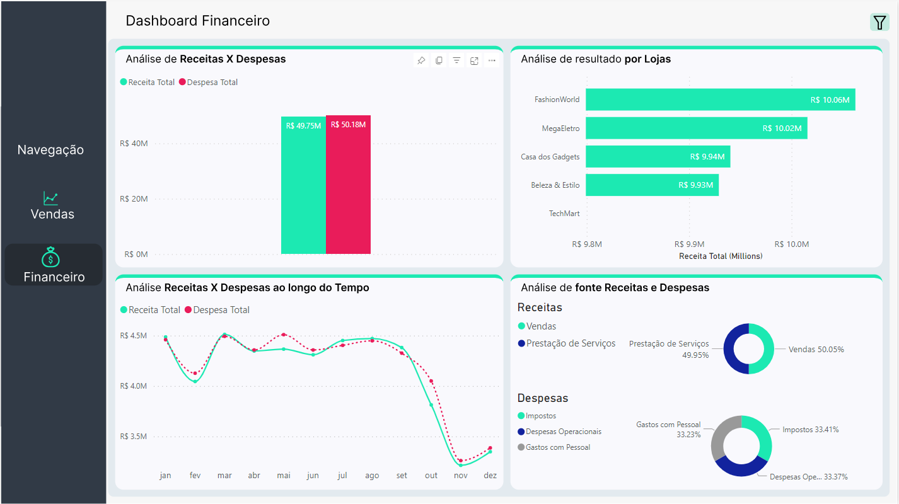
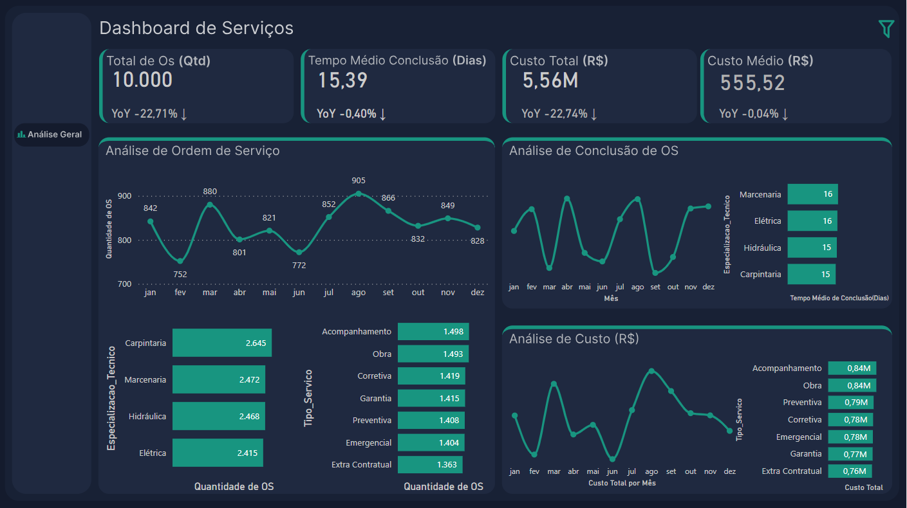
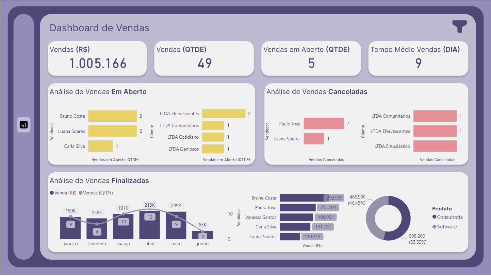

Power BI
Travel Agency Customer and Sales Analysis
Dashboard developed for a travel agency, focused on sales analysis and customer profiling. Using a specific dataset, the dashboard reveals sales trends, purchasing patterns, and customer preferences. It was designed to be intuitive, enabling detailed analysis of popular destinations and purchasing behavior, assisting the agency in data-driven decision making.
Sales and Financial Analysis of Retail Chain
Dashboard developed for a retail chain, focused on monitoring sales and financial metrics. The project facilitates the visualization and analysis of key indicators such as revenue and sales performance. This interactive tool allows management to efficiently monitor the financial performance of the stores, optimizing data-driven decision-making.
Analysis of Service Orders
A dashboard developed for service order tracking, integrating operational data to enhance management and efficiency. It provides real-time information on order status, deadlines, and service team performance. The tool was designed to streamline processes, identify bottlenecks, and improve customer satisfaction, making it a valuable solution for service control and planning.
Online Store Sales Dashboard
I developed a freelance dashboard for a small business owner, focused on tracking their sales. The customized tool displays sales trends and product performance, making it easier for analysis and strategic decision-making for the business.
